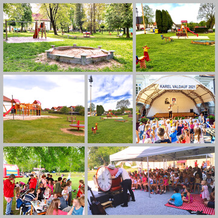

Podpora rodin s dětmi, volnočasové aktivity

Podpora volnočasových aktivit dětí je důležitá nejen pro děti samotné, ale i pro soužití celé rodiny. Je potřeba ve veřejném prostoru vytvářet bezpečná a inspirativní místa pro společné aktivity. Důležitá je také podpora organizací, které se starají o volnočasové aktivity všeho druhu pro různé věkové kategorii. Ideální jsou aktivity, při kterých se schází různé generace a posilují se tím rodinné vztahy.
Podařilo se
-
vybavovat větší dětská hřiště (park u kurtů, Rejta, Otěvěk) a doplňovat herní prvky i v místech, kam děti chodí (u Velkého rybníka, ve většině místních částí) .
-
nejen pro organizované sportování vybudovat multifunkční sportovní hřiště v areálu stadionu.
-
rozšířit a zkvalitnit nabídku kulturních a společenských akcí, kde se setkávají všechny generace – např. tvořivé dílny na staré faře.
-
programy v Centru komunitních aktivit.
-
podpořit organizace, které se rodinám s dětmi věnují – např. rodinné centrum Trhováček, Nízkoprahové centrum Archa a akce pořádané osadními výbory v místních částech.
-
podpořit sportovní kluby působící ve městě.
-
získat dotaci na projekt ve Weiserově parku, který dětem přiblíží život ptáků.
-
prostřednictvím dotačního programu města Živé město podpořit
-
TJ Spartak
-
sdružení dobrovolných hasičů ve městě i v místních částech
-
Základní uměleckou školu F. Pišingera
-
Kruh přátel hudby
-
skautský oddíl Lesní záře
-
Veselou atletiku
-
zájmová sdružení – rybáři, myslivci, včelaři atd.
-
Chceme
-
vytvořit více prostoru pro neformální setkávání, např. na staré faře.
-
vytvořit jízdní dráhu pro děti na odrážedlech a malých kolech.
-
vytvořit hřiště pro teenagery.
-
vytvořit pétanque hřiště.
-
dále doplňovat herní prvky.
-
zatraktivňovat nabídku akcí pro děti a mládež.
-
významně podporovat organizace, které se dětem a rodinám s dětmi věnují.